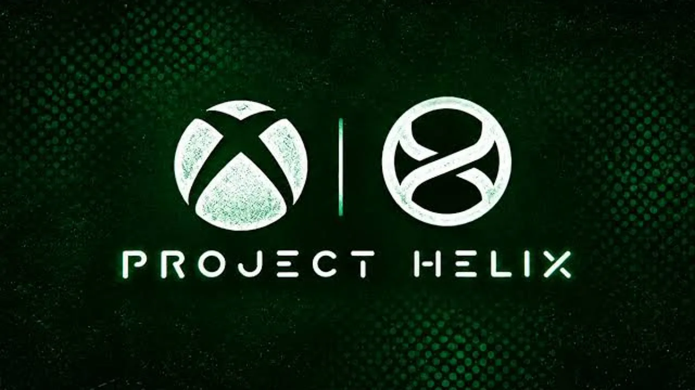
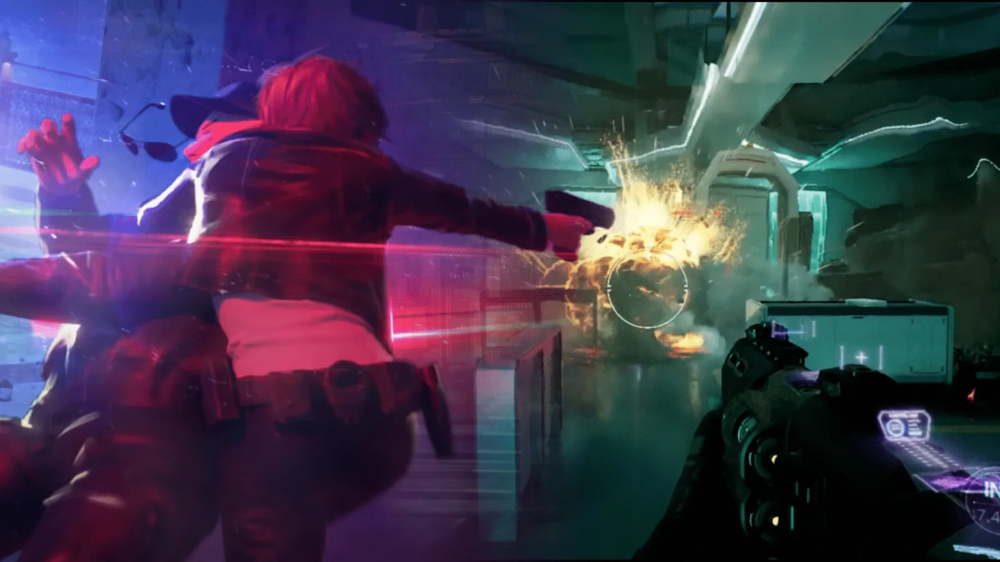
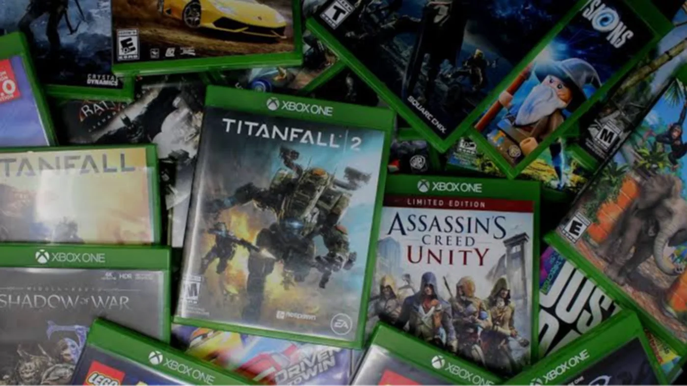

Luiso · 21 de octubre de 2026 · 3 min de lectura
La próxima generación de consolas de Microsoft podría llegar con un precio muy superior al que el público está acostumbrado a pagar por una consola doméstica. Según un informe publicado por Ars Technica, basado en un perfil de la CEO de Xbox, Asha Sharma, elaborado por Fortune, la compañía estaría apuntando a lanzar su próximo hardware de sobremesa, conocido como Project Helix, durante la temporada de fiestas de 2028. El mismo reporte menciona proyecciones internas de precio que van de 1.200 a 1.800 dólares.
La cifra procede de estimaciones internas citadas en el informe y no representa un precio final, una lista de preventa ni una especificación comercial. El costo que paguen los consumidores podría ser menor si la compañía decide subsidiar parte del hardware, una estrategia que las empresas de consolas utilizaron en otras generaciones para mantener sus productos más accesibles.
Aun con esa salvedad, el rango señalado llama la atención por su distancia respecto de los precios históricos de las consolas. Si se concretara en esos valores, Project Helix se acercaría más al territorio de una PC de alto rendimiento que al de una consola tradicional. El informe vincula la presión sobre los costos con la dificultad de abaratar componentes avanzados y la competencia por recursos tecnológicos, incluida la demanda relacionada con la inteligencia artificial.
La información publicada también plantea que Microsoft estaría preparando una estrategia en dos etapas. Primero llegaría un dispositivo portátil de videojuegos durante la segunda mitad de 2027; después, la consola de sobremesa prevista para 2028. Ninguno de esos calendarios debe considerarse una fecha oficial confirmada, pero la posibilidad de que la compañía amplíe su presencia en el mercado portátil encaja con la evolución reciente del ecosistema Xbox hacia dispositivos capaces de ejecutar juegos de consola y PC.
En marzo, Microsoft ya había presentado Project Helix como el nombre en clave de un hardware de próxima generación pensado para ejecutar juegos de Xbox y de PC. Sin embargo, todavía no comunicó especificaciones definitivas, diseño, precio, catálogo de lanzamiento ni detalles completos sobre su sistema operativo. Por lo tanto, aún no está claro qué combinación de componentes y funciones justificaría el rango de precios mencionado en el informe.
El artículo de Fortune también describe discusiones internas sobre la dirección de software para el dispositivo portátil. Según esa información, existieron diferencias respecto de si debía utilizar una versión adaptada de Windows o un sistema más controlado por el equipo de Xbox. El reporte sostiene que el grupo de videojuegos habría ganado mayor control sobre esa decisión, aunque no se trata de una especificación final presentada al público.
Un precio potencial de hasta 1.800 dólares abre una discusión inevitable sobre la posición que tendría Project Helix en el mercado. Una consola suele ofrecer una experiencia más simple y uniforme que una PC, con hardware fijo y una plataforma diseñada alrededor del juego. Pero a medida que el costo sube, los compradores pueden empezar a comparar su valor con el de una computadora que permita jugar, trabajar y actualizar algunos componentes con el tiempo.
De todos modos, no sería correcto asumir que el precio definitivo estará necesariamente en ese rango ni que todos los modelos costarán lo mismo. La estrategia de subsidios, las distintas configuraciones de hardware y las condiciones del mercado podrían modificar el resultado. Además, el valor en dólares no permite anticipar por sí solo el precio que tendría el equipo en Argentina, donde también intervienen impuestos, costos de importación, disponibilidad y márgenes comerciales.
Por ahora, la noticia ofrece una primera referencia sobre las ambiciones y los posibles desafíos económicos de la próxima generación de Xbox. Si el calendario informado se mantiene, todavía quedan cerca de dos años para que Microsoft detalle su propuesta. Hasta que la empresa comunique información oficial, tanto la fecha de 2028 como el precio de hasta 1.800 dólares deben tratarse como datos reportados, no como anuncios definitivos.

7 de octubre de 2026Más de dos minutos de material de desarrollo del Perfect Dark que Microsoft canceló en 2025 aparecieron en Internet. Las imágenes muestran combate, exploración, armas, una secuencia de escape y sistemas de hacking, ofreciendo uno de los vistazos más completos al proyecto que The Initiative desarrolló durante años.
30 de septiembre de 2026El exdirectivo de PlayStation, Shuhei Yoshida, habló sobre el futuro del hardware y consideró que Sony y Nintendo podrían prolongar la vida de PS5 y Switch 2. Su argumento está relacionado con el aumento del precio de los componentes y con la percepción de que muchos jugadores todavía están satisfechos con el hardware actual.

30 de septiembre de 2026Microsoft comenzó a desplegar para todos los usuarios una función que permite convertir determinados juegos físicos de Xbox One y Xbox Series X en licencias digitales. El sistema amplía las posibilidades de los discos, incluyendo compatibilidad con Xbox Series S, Xbox Play Anywhere y juego en la nube cuando el título lo permite.
Cargando comentarios…